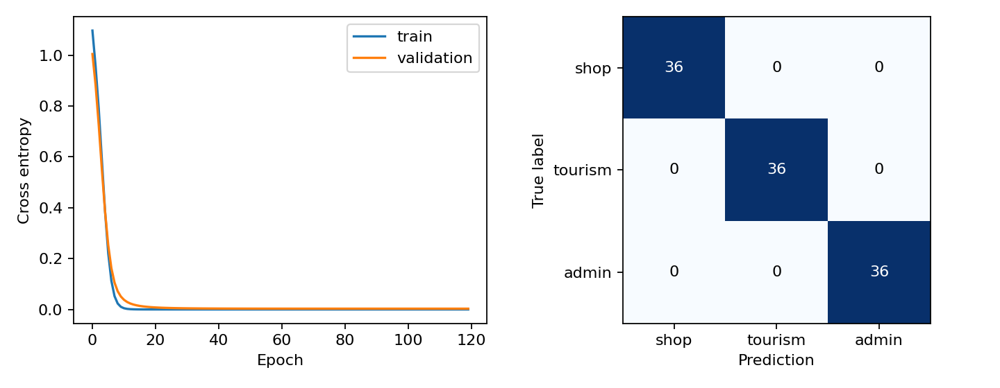
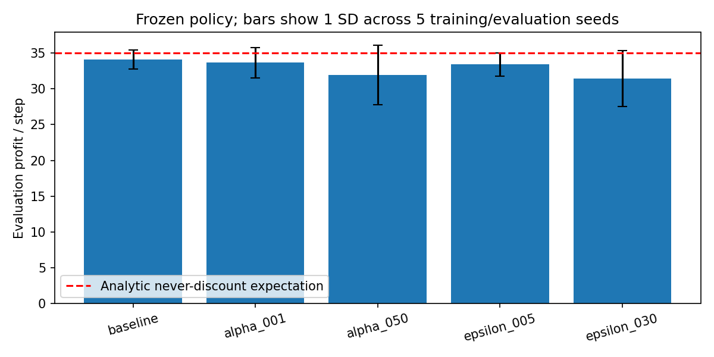

Demo AGENT02 — Nguyễn Nam Hải
PTIT · PHÁT TRIỂN CÁC HỆ THỐNG THÔNG MINHHệ đa tác tử
và agent học tăng cường
Nguyễn Nam Hải · B23DCCN277
Tutorial + hai paper + Laboratory Experiment 02
Demo offline · Dữ liệu mô phỏng/tổng hợp · 28/10/2026
Hai câu hỏi cần kiểm chứng
Chia nhiều agent có giúp hệ thống hoàn thành nhiệm vụ tốt hơn?
Agent học từ reward có vượt được luật đơn giản?
Đối chiếu bằng baseline, bộ ca lỗi, nhiều seed và oracle.
Shopping MAS: vai trò rõ
Yêu cầu → Coordinator
├─ Catalog: ID theo query
├─ Recommender: lọc và xếp hạng
├─ Policy: nguồn gốc + budget
└─ Inventory: stock + freshness
↓
Status + itemsMọi dữ liệu đều cục bộ. Không gọi LLM hoặc thực hiện mua hàng.
Demo 1: bình thường và kiểm trace
python3 tutorial/mas_system.py
Query portable, budget 100 → p2 giá 25 và p4 giá 55.
Laptop bị loại vì giá; giày hết hàng bị loại qua inventory.
Mở notebook tutorial, cell 3: kết quả và trace từng lời gọi.
Demo 2: failure injection
| Tình huống | Hành vi B1 |
|---|
| Agent chậm 50ms, deadline 10ms | timeout |
| Message sai cấu trúc | contract_error |
| Kho cũ một giờ | availability_unverified |
| ID giả / vượt budget | contract_error |
asyncio.wait_for áp deadline thực. Tất cả lỗi trên có test.
Classifier đã train thật
432 câu tiếng Việt tổng hợp, ba lớp.
Train / validation / test: 270 / 54 / 108.
Chia theo họ động từ; vocabulary chỉ từ train. Bag-of-words → MLP 32 hidden → 3 logits.
Test: accuracy = macro-F1 = 100%. Đối tượng vẫn được chia sẻ giữa split nên đây là bài test tương đối dễ.
100% test vẫn có thể sai ngoài miền

Sáu probe OOD: 4 clarify, 2 nhận nhầm vào miền. Confidence cao chưa chứng minh yêu cầu hợp lệ.
So sánh kiến trúc
| Hệ | Ca đúng | Vai trò trong thí nghiệm |
|---|
| B0 single | 11/11 | Baseline có kiểm chứng |
| B1 rule MAS | 11/11 | Chia vai và trace |
| B2 learned MAS | 11/11 | Thêm overhead router |
| B3 bỏ validation | 8/11 | Ablation chẩn đoán |
B2 luôn route một câu mua hàng cố định trong benchmark; routing đa miền được đo riêng. Không dùng P95 B0/B1 để so tốc độ timeout vì B0 tiêm lỗi đồng bộ.
Hai paper: hai mặt của hệ tác tử
Tran và cộng sự, 2025: actors, types, strategies, structures và coordination của MAS dùng LLM.
Naeem và cộng sự, 2020: MDP, Bellman, DP, MC, TD, actor–critic, Bayesian, DQN và ứng dụng RL.
Phân tích chi tiết trong PDF paper, có phản biện và 18 chuyên đề toán học/kỹ thuật.
Assignment: hai cửa hàng quyết định đồng thời
Action: không giảm / giảm 20%
State quan sát: nhu cầu + hành động trước đối thủ
Sales: Binomial(N, conversion)
Reward: sales × margin
Margin từ 5 xuống 3 khi giảm giá. Sales tăng không đồng nghĩa profit tăng.
Protocol để kết quả có ý nghĩa
5.000 episode × 20 bước mỗi training run; năm seed mỗi cấu hình.
Ba alpha, ba epsilon, evaluation riêng 500 episode; Q đóng băng, epsilon 0.
36 lượt training = 3,6 triệu bước; cùng opponent và random tape cho fair comparison. Thêm discount 40%, self-play và DP.
Kết quả: RL chưa vượt luật trong mô hình này

RL baseline 34.0997 ± 1.3678 qua năm seed; rule/DP khoảng 35.1295. Kỳ vọng lý thuyết không giảm là 35.
Phát hiện quan trọng trong mô hình hóa
Rule opponent dùng hành động trước của chính learner, nhưng observation learner không chứa bit này.
Episode hữu hạn 20 bước nhưng Q không chứa thời gian.
DP dùng state đầy đủ và thời điểm; forward occupancy xác nhận chất lượng policy không phụ thuộc noise test.
Demo 3: kiểm thử và bằng chứng
python3 -m unittest discover -s tutorial -p 'test_*.py'
python3 -m unittest discover -s assignment -p 'test_*.py'
17 test tutorial + 12 test assignment đã qua.
CSV từng episode, Q-table, traces, notebook output, LaTeX nguồn và manifest SHA256 đều đi kèm.
Điều kết quả cho phép kết luận
Validation giữ các bất biến; chia vai tạo trách nhiệm và trace nhưng có overhead.
Học từ reward cần state và protocol đúng; kết quả một seed không đại diện thuật toán.
Dữ liệu tổng hợp kiểm cơ chế. Muốn triển khai thật cần dữ liệu, benchmark và kiểm tra độ bền phù hợp.